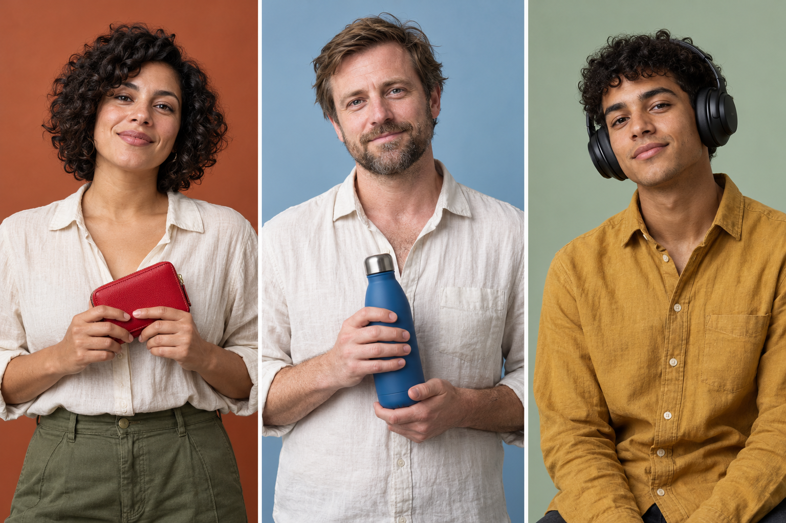

REVIEW and PRACTICE
Grammar
1
Choose and circle.
- I am / is / are in Studio 8.
- Luz and Ben am / is / are in Studio 8.
- Ari isn't / aren't / am not a doctor.
- “Are the photos new?”
“Yes, it is / they are / I am.” - Ari a student. 'm / 's / 're
- It is a / an exhibition.
- This is a studio. A / An / The studio is small.
- This / That / These are Ben's photos.
- My parents are here. These are my parents / parent's / parents' photos.
2
Write the sentences.
- photos / new / are / theThe photos are new.
- is / Luz's / red / wallet
- exhibition / is / the / small
- are / those / pens / blue
- a / this / umbrella / is / gray
Vocabulary
3
Write the words in the table.
doctorthe UKblacknotebookstudentArgentinabluewalletteacherSouth Koreagrayheadphones
| Jobs | Countries | Items | Colors |
|---|---|---|---|
| Argentina | |||
Reading
4
Look and read. Complete with the words.
The ColorProject
STUDIO 8
LuzBenAri
Good evening! This is Studio 8.
Luz is a doctor. Her wallet is 1. She is from Argentina.
Ben is British. He is from 2. He is a teacher. His bottle is blue.
Ari is Luz's 3. He's a student. These are his 4. They are 5.
PHOTO EXHIBITION
Studio 87:30
6Choose a title.
Read again. Complete.
- Luz is Ari's .
- Exhibition time: .